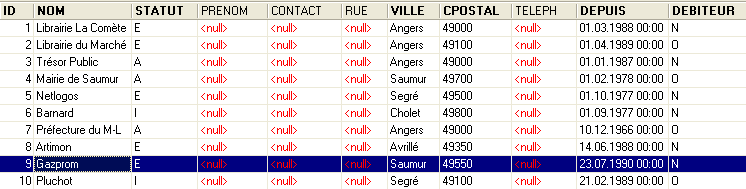
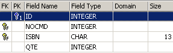
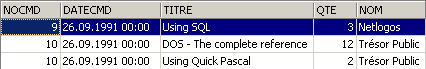
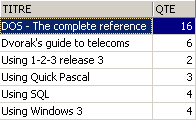
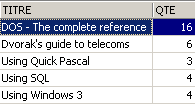

6. Erweiterte SQL
6.1. Einführung
In diesem Kapitel stellen wir vor
- zusätzliche Syntaxvarianten der SELECT-Anweisung vor, die sie zu einem sehr leistungsstarken Abfragebefehl machen, insbesondere für die Abfrage mehrerer Tabellen auf einmal.
- erweiterte Syntaxen von bereits behandelten Befehlen
Um die verschiedenen Bestellungen zu veranschaulichen, arbeiten wir mit den folgenden Tabellen, die für die Auftragsverwaltung in einem kleinen bis mittelgroßen Buchvertriebsunternehmen verwendet werden:
6.1.1. die Tabelle CLIENTS
Sie speichert Informationen über die Kunden des Unternehmens:
 |

Eine eindeutige Kennung für den Kunden – Primärschlüssel | |
Kundenname | |
I=Privatperson, E=Unternehmen, A=Behörde | |
Vorname einer Privatperson | |
Name der Kontaktperson am Standort des Kunden (im Falle eines Unternehmens oder einer Behörde) | |
Kundenadresse – Straße | |
Stadt | |
PLZ | |
Telefon | |
Seit wann sind Sie Kunde? | |
Y (Ja), wenn der Kunde dem Unternehmen Geld schuldet, und N (Nein) andernfalls. |
6.1.2. Die Tabelle „ARTIKEL“
Sie speichert Informationen über die verkauften Produkte, in diesem Fall Bücher. Ihre Struktur ist wie folgt:

Eine eindeutige Kennung für ein Buch (ISBN = International Standard Book Number) – Primärschlüssel | |
Titel des Buches | |
Code zur eindeutigen Identifizierung eines Verlags | |
Name des Autors | |
Zusammenfassung des Buches | |
In diesem Jahr verkaufte Menge | |
Verkaufte Menge im Vorjahr | |
Datum des letzten Verkaufs | |
Menge der letzten Lieferung | |
Datum der letzten Lieferung | |
Verkaufspreis | |
Anschaffungskosten | |
Mindestbestellmenge | |
Mindestbestand | |
Lagerbestand |
Der Inhalt könnte wie folgt aussehen:

6.1.3. die Tabelle ORDERS
Sie speichert Informationen zu den von Kunden aufgegebenen Bestellungen. Ihre Struktur ist wie folgt:

Eine eindeutige Kennung für eine Bestellung – Primärschlüssel | |
Kunden-ID für diesen Auftrag – Fremdschlüssel – Verweis auf CUSTOMERS(ID) | |
Datum, an dem diese Bestellung erfasst wurde | |
O (Ja), wenn die Bestellung storniert wurde, und N (Nein) andernfalls. |

6.1.4. Die Tabelle DETAILS
Sie enthält die Details einer Bestellung, d. h. die Titel und Mengen der bestellten Bücher. Ihre Struktur ist wie folgt:

Bestellnummer – Fremdschlüssel, der auf die Spalte NOCMD der Tabelle COMMANDES verweist | |
Bestellnummer – Fremdschlüssel, der auf die Spalte ISBN in der Tabelle BOOKS verweist | |
Bestellte Menge |
Der Inhalt könnte wie folgt aussehen:

Oben sehen wir, dass die Bestellung Nr. 3 (NOCMD) drei Bücher umfasst. Das bedeutet, dass der Kunde drei Bücher gleichzeitig bestellt hat. Die Datensätze dieses Kunden finden sich in der Tabelle [ORDERS], wo wir sehen, dass die Bestellung Nr. 3 von Kunde Nr. 5 aufgegeben wurde. Die Tabelle [CUSTOMERS] verrät uns, dass es sich bei Kunde Nr. 5 um die Firma NetLogos in Segré handelt.
6.2. Die SELECT-Anweisung
Hier wollen wir unser Verständnis der SELECT-Anweisung vertiefen, indem wir neue Syntaxen dafür einführen.
6.2.1. Syntax einer Abfrage über mehrere Tabellen
SELECT Spalte1, Spalte2, ... FROM Tabelle1, Tabelle2, ..., Tabellep WHERE Bedingung ORDER BY ... | |
Das Neue daran ist, dass die Spalten column1, column2, ... aus mehreren Tabellen table1, table2, ... stammen. Wenn zwei Tabellen Spalten mit demselben Namen haben, wird die Mehrdeutigkeit mithilfe der Notation tablei.columnj aufgelöst. Die Bedingung kann auf Spalten aus verschiedenen Tabellen angewendet werden. |
So funktioniert es
Es wird das kartesische Produkt der Tabellen table1, table2, ..., tablep gebildet. Wenn n_i die Anzahl der Zeilen in table_i ist, hat die resultierende Tabelle n₁*n₂*...*n_p Zeilen, die alle Spalten aus den verschiedenen Tabellen enthalten. | |
Die WHERE-Bedingung wird auf diese Tabelle angewendet. So entsteht eine neue Tabelle | |
Diese Tabelle wird gemäß der in ORDER angegebenen Methode sortiert. | |
Die nach SELECT angegebenen Spalten werden angezeigt. |
Beispiele
Wir verwenden die zuvor vorgestellten Tabellen. Wir möchten die Details der Bestellungen einsehen, die nach dem 25. September aufgegeben wurden:
SQL>select details.nocmd,isbn,qte from commandes,details
where commandes.datecmd>'25-sep-91'
and details.nocmd=commandes.nocmd

Beachten Sie, dass wir nach FROM die Namen aller Tabellen auflisten, auf deren Spalten wir verweisen. Im vorherigen Beispiel gehören die ausgewählten Spalten alle zur Tabelle DETAILS. Die Bedingung bezieht sich jedoch auf die Tabelle ORDERS. Daher muss letztere nach FROM aufgeführt werden. Die Operation, die auf Gleichheit zwischen Spalten in zwei verschiedenen Tabellen prüft, wird oft als Equijoin bezeichnet.
Die SELECT-Abfrage hätte auch wie folgt geschrieben werden können:
SQL> select details.nocmd,isbn,qte from commandes
inner join details on details.nocmd=commandes.nocmd
where commandes.datecmd>'25-sep-91'
Fahren wir mit unseren Beispielen fort. Wir möchten das gleiche Ergebnis wie zuvor, jedoch mit dem Titel des bestellten Buches anstelle der ISBN:
SQL>select commandes.nocmd, articles.titre, details.qte
from commandes,articles,details
where commandes.datecmd>'25-sep-91'
and details.nocmd=commandes.nocmd
and details.isbn=articles.isbn

Das gleiche Ergebnis erhält man mit der folgenden SQL-Abfrage, die jedoch weniger gut lesbar ist:
SQL> select details.nocmd,articles.titre,details.qte from details
inner join commandes on details.nocmd=commandes.nocmd
inner join articles on details.isbn=articles.isbn
where commandes.datecmd>'25-sep-91'
Oben werden zwei innere Verknüpfungen mit der Tabelle [DETAILS] durchgeführt:
- einer mit der Tabelle [ORDERS], um das Bestelldatum eines Buches abzurufen
- einer mit der Tabelle [ARTICLES], um auf den Titel des bestellten Buches zuzugreifen
Außerdem möchten wir den Namen des Kunden, der die Bestellung aufgegeben hat:
SQL>select commandes.nocmd, articles.titre, qte ,clients.nom
from commandes,details,articles,clients
where commandes.datecmd>'25-sep-91'
and details.nocmd=commandes.nocmd
and details.isbn=articles.isbn
and commandes.idcli=clients.id

Wir möchten außerdem die Bestelldaten und eine Anzeige dieser Daten in absteigender Reihenfolge:
SQL>select commandes.nocmd, commandes.datecmd, articles.titre, qte ,clients.nom
from commandes,details,articles,clients
where commandes.datecmd>'25-sep-91'
and details.nocmd=commandes.nocmd
and details.isbn=articles.isbn
and commandes.idcli=clients.id
order by commandes.datecmd descending

Hier sind einige Regeln, die Sie beim Erstellen von Verknüpfungen beachten sollten:
- Führen Sie nach SELECT die Spalten auf, die Sie anzeigen möchten. Wenn die Spalte in mehreren Tabellen vorhanden ist, stellen Sie den Tabellennamen davor.
- Führen Sie nach FROM alle Tabellen auf, die von der SELECT-Anweisung abgefragt werden, d. h. die Tabellen, die die nach SELECT und WHERE aufgeführten Spalten enthalten.
6.2.2. Selbstverknüpfung
Wir möchten die Bücher finden, deren Verkaufspreis höher ist als der des Buches „Using SQL“:
SQL>select a.titre from articles a, articles b
where b.titre='Using SQL'
and a.prixvente>b.prixvente

Die beiden Tabellen in der Verknüpfung sind hier identisch: die Tabelle „articles“. Um sie voneinander zu unterscheiden, vergeben wir ihnen Aliase: „articles a“, „articles b“. Der Alias für die erste Tabelle lautet „a“, der für die zweite „b“. Diese Syntax kann auch verwendet werden, wenn die Tabellen unterschiedlich sind. Wenn ein Alias verwendet wird, muss er in der gesamten SELECT-Anweisung anstelle der Tabelle, auf die er sich bezieht, verwendet werden.
6.2.3. Outer Join
Wir möchten die Kunden ermitteln, die im September einen Kauf getätigt haben, zusammen mit dem Bestelldatum. Die anderen Kunden werden ohne dieses Datum angezeigt:
SQL>select clients.nom,commandes.datecmd from clients
left outer join commandes on clients.id=commandes.idcli
where datecmd between '01-sep-91' and '30-sep-91'

Es ist hier überraschend, dass wir nicht das richtige Ergebnis erhalten. Wir sollten alle Kunden aus der Tabelle [CLIENTS] erhalten, was jedoch nicht der Fall ist. Wenn wir uns überlegen, wie ein Outer Join funktioniert, wird klar, dass Kunden, die keinen Kauf getätigt haben, mit einer leeren Zeile in der Tabelle ORDERS abgeglichen wurden und daher ein leeres Datum (in der SQL-Terminologie ein NULL-Wert) erhalten haben. Dieses Datum erfüllt die für das Datum festgelegte Bedingung nicht, sodass der entsprechende Kunde nicht angezeigt wird. Versuchen wir es anders:
SQL>select clients.nom,commandes.datecmd from clients
left outer join commandes on clients.id=commandes.idcli
where (commandes.datecmd between '01-sep-91' and '30-sep-91')
or (commandes.datecmd is null)

Diesmal erhalten wir die richtige Antwort auf unsere Frage.
6.2.4. Verschachtelte Abfragen
SELECT Spalte[n] FROM Tabelle[n] WHERE Ausdruck Abfrageoperator ORDER BY ... | |
Eine Abfrage ist eine SELECT-Anweisung, die eine Menge von 0, 1 oder mehreren Werten zurückgibt. Wir haben dann eine WHERE-Bedingung vom Typ Ausdruck Operator (val1, val2, ..., vali) Ausdruck und vali müssen vom gleichen Typ sein. Wenn die Abfrage einen einzelnen Wert zurückgibt, reduziert sich die Bedingung auf den Typ Ausdruck Operator Wert , die uns bekannt ist. Wenn die Abfrage eine Liste von Werten zurückgibt, können wir die folgenden Operatoren verwenden:
Ausdruck IN (val1, val2, ..., vali): true, wenn Ausdruck zu einem der Elemente in der Liste vali ausgewertet wird.
Gegenteil von IN
muss von =, !=, >, >=, <, <= Ausdruck >= ANY (val1, val2, .., valn): wahr, wenn Ausdruck >= einem der Werte vali in der Liste ist
muss von =, !=, >, >=, <, <= vorangestellt werden Ausdruck >= ALL (val1, val2, .., valn): wahr, wenn Ausdruck >= allen gültigen Werten in der Liste ist
Abfrage: wahr, wenn die Abfrage mindestens eine Zeile zurückgibt. |
Beispiele
Kehren wir zu der Frage zurück, die bereits durch eine Equijoin gelöst wurde: Zeigen Sie die Titel an, deren Verkaufspreis höher ist als der des Buches „Using SQL“.
SQL>select titre from ARTICLES
where prixvente > (select prixvente from ARTICLES where titre='Using SQL')

Diese Lösung erscheint intuitiver als die Equijoin-Methode. Wir führen zunächst eine Filterung mit einem SELECT durch, dann eine zweite auf der resultierenden Menge. Auf diese Weise können wir mehrere Filter nacheinander anwenden.
Wir möchten die Titel finden, deren Verkaufspreis über dem durchschnittlichen Verkaufspreis liegt:

Welche Kunden haben die Titel bestellt, die von der vorherigen Abfrage zurückgegeben wurden?
SQL>select distinct idcli from COMMANDES,DETAILS
where DETAILS.isbn in
(select isbn from ARTICLES where prixvente
> (select avg(prixvente) from ARTICLES))
and COMMANDES.nocmd=DETAILS.nocmd

Erläuterung
- Wir wählen aus der Tabelle DETAILS die ISBN-Codes aus, die bei Büchern mit einem Preis über dem durchschnittlichen Buchpreis vorkommen.
- In den im vorherigen Schritt ausgewählten Zeilen ist die Kunden-ID (IDCLI) nicht vorhanden. Sie befindet sich in der Tabelle ORDERS. Die Verknüpfung zwischen den beiden Tabellen erfolgt über die Bestellnummer (NOCMD), daher die Verknüpfungsbedingung ORDERS.nocmd=DETAILS.nocmd.
- Ein einzelner Kunde kann eines der betreffenden Bücher mehrfach gekauft haben; in diesem Fall würde seine IDCLI-Nummer mehrfach erscheinen. Um dies zu vermeiden, setzen wir das Schlüsselwort DISTINCT hinter SELECT. DISTINCT entfernt im Allgemeinen Duplikate aus den von einer SELECT-Abfrage zurückgegebenen Zeilen.
- Um den Namen des Kunden abzurufen, müssten wir eine zusätzliche Verknüpfung zwischen den Tabellen ORDERS und CUSTOMERS durchführen, wie in der folgenden Abfrage gezeigt.
SQL> select distinct CLIENTS.nom from COMMANDES,DETAILS,CLIENTS
where DETAILS.isbn in
(select isbn from ARTICLES where prixvente
> (select avg(prixvente) from ARTICLES))
and COMMANDES.nocmd=DETAILS.nocmd
and COMMANDES.IDCLI=CLIENTS.ID

Finde Kunden, die seit dem 24. September keine Bestellung aufgegeben haben:
SQL>select nom from CLIENTS
where clients.id not in
(select distinct commandes.idcli from commandes where datecmd>='24-sep-91')

Wir haben gesehen, dass Zeilen auch auf andere Weise als mit der WHERE-Klausel gefiltert werden können: durch die Verwendung der HAVING-Klausel in Verbindung mit der GROUP BY-Klausel. Die HAVING-Klausel filtert Gruppen von Zeilen.
Genau wie bei der WHERE-Klausel lautet die Syntax
HAVING expression opérateur requête
ist möglich, mit der bereits erwähnten Einschränkung, dass Ausdruck einer der Ausdrücke expri in der Klausel sein muss
GROUP BY expr1, expr2, ...
Beispiele
Wie hoch sind die Verkaufszahlen für Bücher, die mehr als 200 F kosten?
Zunächst wollen wir die verkauften Stückzahlen nach Titel anzeigen:
SQL>select ARTICLES.titre,sum(qte) QTE from ARTICLES, DETAILS
where DETAILS.isbn=ARTICLES.isbn
group by titre

Nun filtern wir die Titel:
SQL> select ARTICLES.titre,sum(qte) QTE from ARTICLES, DETAILS
where DETAILS.isbn=ARTICLES.isbn
group by titre
having titre in (select titre from ARTICLES where prixvente>200)

Vielleicht hätte man auch ganz einfach schreiben können:
SQL>select ARTICLES.titre,sum(qte) QTE from ARTICLES, DETAILS
where DETAILS.isbn=ARTICLES.isbn
and ARTICLES.prixvente>200
group by titre

6.2.5. Verschachtelte Abfragen
Bei verschachtelten Abfragen gibt es eine übergeordnete Abfrage (die äußerste Abfrage) und eine untergeordnete Abfrage (die innerste Abfrage). Die übergeordnete Abfrage wird erst ausgewertet, nachdem die untergeordnete Abfrage vollständig ausgewertet wurde.
Korrelierte Abfragen haben dieselbe Syntax, mit folgendem kleinen Unterschied: Die untergeordnete Abfrage führt einen Join auf die Tabelle der übergeordneten Abfrage durch. In diesem Fall wird das Eltern-Kind-Abfragepaar für jede Zeile in der übergeordneten Tabelle wiederholt ausgewertet.
Beispiel
Schauen wir uns noch einmal das Beispiel an, in dem wir die Namen der Kunden ermitteln wollen, die seit dem 24. September keine Bestellung aufgegeben haben:
SQL>
select nom from clients
where not exists
(select idcli from commandes
where datecmd>='24-sep-91'
and commandes.idcli=clients.id)

Die übergeordnete Abfrage arbeitet mit der Tabelle „customers“. Die untergeordnete Abfrage führt eine Verknüpfung zwischen den Tabellen „customers“ und „orders“ durch. Es handelt sich also um eine korrelierte Abfrage. Für jede Zeile in der Tabelle „clients“ wird die untergeordnete Abfrage ausgeführt: Sie sucht nach der ID des Kunden in Bestellungen, die nach dem 24. September aufgegeben wurden. Wenn sie keine findet (not exists), wird der Name des Kunden angezeigt. Anschließend geht sie zur nächsten Zeile in der Tabelle „clients“ über.
6.2.6. Kriterien für das Schreiben der SELECT-Anweisung
Wir haben bereits mehrfach gesehen, dass es möglich ist, mit verschiedenen SELECT-Anweisungen zum gleichen Ergebnis zu gelangen. Nehmen wir ein Beispiel: Anzeige der Kunden, die eine Bestellung aufgegeben haben:
Join

Verschachtelte Abfragen
liefert das gleiche Ergebnis.
Korrelierte Abfragen
SQL>
select nom from clients
where exists (select * from commandes where commandes.idcli=clients.id)
liefert das gleiche Ergebnis.
Die Autoren Christian MAREE und Guy LEDANT schlagen in ihrem Buch „SQL: Introduction, Programming, and Mastery“ einige Auswahlkriterien vor:
Leistung
Der Benutzer weiß nicht, wie das DBMS es „schafft“, die von ihm angeforderten Ergebnisse zu finden. Daher wird er erst durch Erfahrung feststellen, dass eine Abfrage effizienter ist als eine andere. MAREE und LEDANT behaupten aus Erfahrung, dass korrelierte Abfragen im Allgemeinen langsamer erscheinen als verschachtelte Abfragen oder Joins.
Formulierung
Die Formulierung mit verschachtelten Abfragen ist oft lesbarer und intuitiver als Joins. Sie ist jedoch nicht immer anwendbar. Insbesondere sind zwei Punkte zu beachten:
- Die Tabellen, die die in der SELECT-Klausel angegebenen Spalten enthalten (SELECT col1, col2, ...), müssen nach dem Schlüsselwort FROM aufgeführt werden. Anschließend wird das kartesische Produkt dieser Tabellen gebildet, was als Join bezeichnet wird.
- Wenn die Abfrage Ergebnisse aus einer einzelnen Tabelle anzeigt und zum Filtern der Zeilen dieser Tabelle eine andere Tabelle herangezogen werden muss, können verschachtelte Abfragen verwendet werden.
6.3. Syntaxerweiterungen
Der Einfachheit halber haben wir meist verkürzte Syntaxen für die verschiedenen Befehle vorgestellt. In diesem Abschnitt stellen wir ihre erweiterten Syntaxen vor. Sie sind selbsterklärend, da sie denen des weit verbreiteten SELECT-Befehls entsprechen.
INSERT
INSERT INTO Tabelle (Spalte1, Spalte2, ...) VALUES (Wert1, Wert2, ...) | |
INSERT INTO Tabelle (Spalte1, Spalte2, ...) (Abfrage) | |
Diese beiden Syntaxen wurden vorgestellt |
DELETE
DELETE FROM Tabelle WHERE Bedingung | |
Diese Syntax ist allgemein bekannt. Beachten Sie, dass die Bedingung eine Abfrage enthalten kann, die die Syntax WHERE Ausdruck Operator (Abfrage) verwendet. |
UPDATE
UPDATE Tabelle SET Spalte1=Ausdruck1, Spalte2=Ausdruck2, ... WHERE Bedingung | |
Diese Syntax wurde bereits vorgestellt. Beachten Sie, dass die Bedingung eine Abfrage enthalten kann, die die Syntax WHERE Ausdruck Operator (Abfrage) verwendet. |
UPDATE Tabelle SET (Spalte1, Spalte2, ..) = Abfrage1, (SpalteA, SpalteB, ..) = Abfrage2, ... WHERE Bedingung | |
Die den verschiedenen Spalten zugewiesenen Werte können aus einer Abfrage stammen. |